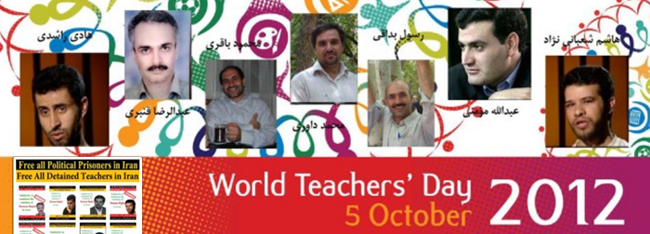

|
|

پشتیبانی جمعی از فعالان حقوق زنان از بیانیه کمیته هماهنگی "کمپین حمایت از معلمان"
سه شنبه11 مهر 1391

http://www.facebook.com/BeVoiceOfIranianTeachers?fref=ts
تغییر برای برابری -بیش از صد و پنجاه تن از فعالان حقوق زنان با انشتار بیانیه ای، اعلام کرده اند که برای دفاع از حقوق معلمان ایرانی، به ویژه معلمانی که به دلیل فعالیتهای صنفی شان حکم مجازات دریافت کرده اند، از کمپین حمایت از معلمان، پشتیبانی می کنند.
فعالان حقوق زنی که این بیانیه را امضا کرده اند، به فشار مضاعف و محدودیتهای بیشتری که در ایران متوجه زنان معلم است و نیز به شرایط زنانی که همسرشان معلم زندانی است، اشاره داشته اند.
اعلام حمایت فعالان حقوق زن، در شرایطی صورت می گیرد که برخی از معلمان فعال مدنی احکامی از زندان تا اعدام را دریافت کرده اند که در میان ایشان معلمان زنی چون فهیمه اسماعیل بدوی ، معام اهوازی نیز دیده می شود که به گفته سازمان عفو بین الملل در هنگام دستگیری هشت ماهه باردار بود.
فعالان زن در این بیانیه که به شرح زیر است ، 14 مهرماه، روز جهانی معلم را پیشاپیش به معلمان تبریک گفته و از همه فعالان ایرانی خواسته اند که برای دفاع از خواسته های صنفی و سیاسی معلمان ، با آنان همصدا شوند.
پشتیبانی جمعی از فعالان حقوق زنان از بیانیه کمیته هماهنگی "کمپین حمایت از معلمان
صدای مهر می آید. بوی لباسهای اطو کشیده، کیفهای برق انداخته، بوی گل، بوی مهر. بچه ها به صف شدهاند. کلاس اولیها جلوتر از بقیه راهیاند. صفها پشت هم، منظم ... صدای زنگ در گوش مدرسه پیچده است و شهر پر شده از هیاهوی بچهها. در همین حال و هوا روز جهانی معلم در پیش است.
کمی دورتر اما سایه بلند دیوارهای اوین، تابش آفتاب مهر بر معلمان دربند را سد کرده است. معلمانی که در تمام سالهای پس از انقلاب، سالهای تحمیل جنگ، تحریم و تبعیض، جزء محرومترین قشرهای جامعه ایرانی از نظر رفاه فردی و اجتماعی بودهاند. آموزگارانی که امروز در اعتراض به نادیده گرفتن ابتداییترین حقوقشان لب به اعتراض گشوده، اما سهمگینترین پاسخ را از حاکمیت ایران دریافت کردهاند.
در طول سی و سه سال گذشته حکومت ایران همواره به مدرسه ها نگاهی ابزاری داشته است. ابزاری برای پرورش و تربیت نیروهایی که باید در خدمت نظام و تکالیف آن بوده و تاییدکننده همه ویژگیهای آن باشند. فارغ از اینکه چنین هدفی، چه فجایع اجتماعی به جامعه ایرانی تحمیل کرده و چه تعداد از فرزندان کشور را از بالیدن در فضای آزادی در سرزمین مادری محروم کرده و حتا حق حیات از آنها ستانده است، بسیاری از معلمان را نیز قربانی اهداف خویش کرده است.
حذف معلمان با گرایشهای فکری منتقدانه، پاکسازیها، محرومیتها، تبعیضها و ... که یک به یک فضا را برای نفس کشیدن تنگ و تنگتر کرده، از نتایج نگاه ابزاری به مدارس و معلمان بوده است.
در همین راستا معلمان زن، به دلیل تبعیضهای جنسیتی به ویژه به خاطر حجاب اجباری و در برخی از نقاط کشور به دلیل داشتن پوشش چادر اجباری، محرومیتها و محدودیتهای بیشتری نیز متحمل شدهاند.
صدای خاموش و حبس شده در گلوی معلمان، در اعتراض کانون صنفی معلمان رخ نمود. اعتراض به نادیده گرفتن ابتداییترین حقوق معلمانی که حاکمیت به آنها لقبی هم شان پیامبران میدهد، اما در عمل ایشان را از سادهترین و ابتداییترین حقوقشان محروم می دارد.
همانگونه که در بیانیه کمیته هماهنگی کمپین حمایت از معلمان آمده است، این کمیته اعلام داشته که اعتراضهای کانون صنفی معلمان احکامی از اعدام تا زندان را برای این فعالان به همراه داشته است. اعتراضی که شرایطی بسیار سخت را بر خانوادههای ایشان به ویژه همسرانشان تحمیل کرده است.
ما جمعی از فعالان حقوق زن، ضمن تبریک به همه معلمان پرتلاش کشورمان به مناسبت فرار سیدن روز جهانی معلم، با انتشار این بیانیه، پشتیبانی خود را از کمپین حمایت از حقوق معلمان ایرانی به ویژه معلمان زندانی، اعلام می کنیم و از همه فعالان مدنی و اجتماعی و نیز از همه مردم ایران میخواهیم در حمایت از خواستههای صنفی و سیاسی معلمان، به ویژه معلمان زندانی، با آنان همصدا شوند.
اعظم بهرامی، اکرم محمدی، اکرم نقابی، الهه امانی، الهه فراهاني، الهه گلکار، امالبنی ابراهیمی، امیر رشیدی، امیرحسین توسطی ، ایرن شیخ، آرش نصیری اقبالی، آزاده خسروشاهی، آزاده دواچی، آسيه اميني، آمنه زیلایی، آیدا سعادت ، آینده آزاد، بنفشه جمالی، بهمن مبشری ، بهمن محمدی چاهکی، پرتو نوری علا، پرستو الهیاری، پروانه راد، پروانه وحیدمنش، پروین اردلان، پروین بختیارنژاد، پروین شهبازی، پری نعمانی، پریسا احمدیان، پوران کریمی، تراب مستوفی، توران همتی، ثریا فلاح، جعفر مرتضوي، جلوه جواهری، حسن نایب هاشم، حسن نجفی ، حسین علوی، حمید حمیدی، خدیجه مقدم، درسا سبحانی، رضوان مقدم، روبان تبریزی، روجا بندری، روحی شفیعی، رها عسكريزاده، زرین شقاقی، زهراابراهیمی، زینب پیغمبرزاده، ژاله گوهری، ژانت آفاری، ژیلا گلعنبر، سارا صحرانورد فرد، ستاره هاشمی، سحر دیناروند، سحر کیا، سعیده سهرابی، سمانه عابدینی، سوده راد، سوسن طهماسبی، سوسن یزدانی، سوفیا صدیقپور، سیروس مرادی، سیما بختیاری، سیمین مرعشی، شادی صدر، شبنم موسوی، شعله زمینی، شکوه جوادیان، شمس تولایی، شهابالدین شیخی، شهزاد حسینی، شهلا بهاردوست ، شهلا عبقری، شهناز بیات، شهین بنی احمدی، شهین دوستدار، شیرین فامیلی، شیوا بدیهینژاد، شیوا نوجو، صدیقه فخرآبادی، صدیقه مقدم، عشرت بستجانی، عفت ماهباز، علی صدارت، علی ابراهیمی، علی گوشه، علی ماهباز، فاطمه رضایی، فاطمه مسجدی، ، فرح کمانگر، فرحروز رنجبر، فرحناز محمدی، فریبا پارسا، فریبا تحقیقی، فریده باقری، فریده کرملویی فريدهيزدی، فیروزه مهاجر، کبری ابراهیمی، کتایون عظیمی فرد، كاويان صادقزاده ميلاني، گیسو جهانگیری، لیلا اسدی، لیلا اصلانی، لیلا سیفاللهی، لیلا صحت، لیلا موری، مائده سلطانی، محبوبه حسینزاده، محبوبه عباسقلیزاده، محسن معین، محمدعلی مهرآسا، مریم امی، مریم اهری، مریم رحمانی، مریم زندی، مریم کاویانی، معصومه زمانی، ملیحه جلیلوند، منصوره خسروشاهی، منصوره شجاعی، منوچهر تقوی بیات، منیره برادران، منیژه مرعشی، مهدیه صالحپور، مهرانگیز کار، مهشيد پگاهى، مینا انصاری، الناز انصاری، ناهید توسلی، ناهید جعفری، ناهید حسینی، ناهید میرحاج، ناهيد خيرابي، نرگس سقایی، نرگس کرمانشاهی، نسترن سامی، نسرین حمیدی، نفیسه آزاد، نگار سماک نژاد، نوید محبی، نیره توحیدی، ویکتوریا آزاد، هایده مغیثی، همایون مبصری، همایون مهمنش، بنیاد ندا برای ایران آزاد، سایت "ما زنان" ،